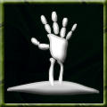

|
 |
Raise The raise dead ability can be used on a nearby corpse to animate its bones and create a skeleton grunt. This grunt can then be incorporated into the clan work structure. Command: animate <corpse> <grunt|warrior> This ability is based on:
Despots may purchase the raise ability for half of the normal karma cost.
Effects of the raise ability:
|
Fly | Regenerate | Resonance | Resurrection | Shroud of Mist | Teleport | True Sight | Chain Lightning | Cold-breathing | Cold Touch | Haste | Stun | Fireball | Poison Breath | Fire-breathing | Spit Acid | Raise | Focus | Disease Breath